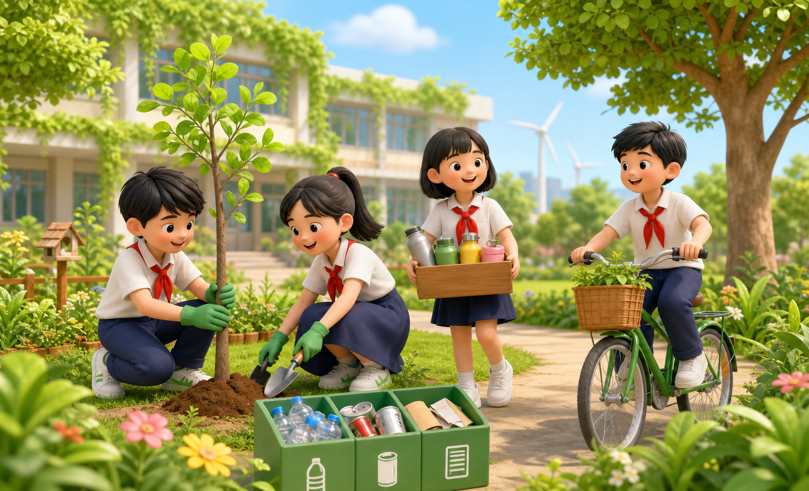
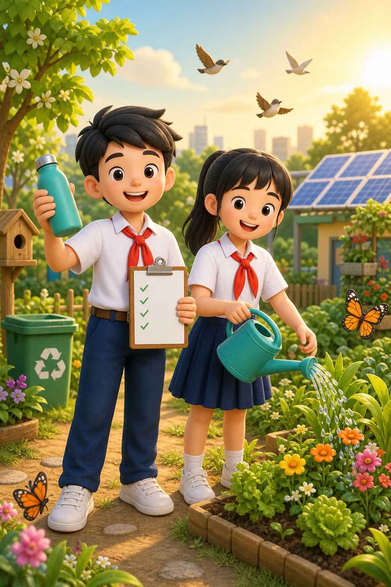

Khí hậu nóng lên
Giảm tiêu thụ điện và trồng thêm cây giúp hạn chế khí thải gây hiệu ứng nhà kính.
Sống xanh không hề khó. Hãy cùng bắt đầu từ những thói quen đơn giản ở trường, ở nhà và lan tỏa điều tốt đẹp đến mọi người.

Mỗi lựa chọn nhỏ của chúng ta đều có thể tạo nên thay đổi lớn cho môi trường.
Giảm tiêu thụ điện và trồng thêm cây giúp hạn chế khí thải gây hiệu ứng nhà kính.
Một chiếc túi nhựa mất hàng trăm năm để phân hủy. Hãy nói “không” khi không cần thiết.
Bảo vệ cây xanh, nguồn nước và động vật chính là bảo vệ tương lai của chúng ta.
Không cần làm điều gì quá lớn lao. Chỉ cần chúng mình kiên trì mỗi ngày!
Tắt đèn, quạt và thiết bị điện khi ra khỏi phòng.
Dễ thực hiệnKhóa vòi nước khi đánh răng và báo ngay khi thấy rò rỉ.
Cực kỳ cần thiếtĐi bộ, xe đạp hoặc xe buýt khi quãng đường phù hợp.
Tốt cho sức khỏeMang túi vải và bình nước cá nhân khi ra ngoài.
Giảm nhựa dùng một lầnLấy vừa đủ thức ăn và ưu tiên thực phẩm địa phương.
Ăn đủ, sống khỏeTrồng một chậu cây nhỏ và chăm sóc cây mỗi ngày.
Thêm mảng xanhNhấn vào từng thùng để khám phá loại rác phù hợp nhé!
Hoàn thành một hành động mỗi ngày. Đánh dấu và cùng bạn bè tạo nên một tuần thật ý nghĩa!

Cùng nhau hoàn thành!Bạn đã hoàn thành đủ 7 ngày sống xanh. Bảy hành động nhỏ hôm nay đang góp phần tạo nên một Trái Đất xanh hơn!
“Chúng ta không thừa kế Trái Đất từ tổ tiên,
chúng ta mượn nó từ thế hệ tương lai.”
— Thông điệp sống xanh —